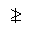
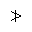
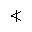
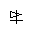
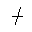

| Name | Unicode | Glyph | Unicode Name | Description | Aliases |
|---|
| gnap | U+2A8A |  | GREATER-THAN AND NOT APPROXIMATE | /gnapprox N: greater, not approximate | gnapprox |
| gne | U+2A88 |  | GREATER-THAN AND SINGLE-LINE NOT EQUAL TO | /gneq N: greater, not equals | gneq |
| gnE | U+2269 |  | GREATER-THAN BUT NOT EQUAL TO | /gneqq N: greater, not dbl equals | gneqq |
| gnsim | U+22E7 |  | GREATER-THAN BUT NOT EQUIVALENT TO | /gnsim N: greater, not similar | |
| gvnE | U+2269 U+FE00 |  | GREATER-THAN BUT NOT EQUAL TO - with vertical stroke | /gvertneqq N: gt, vert, not dbl eq | gvertneqq |
| lnap | U+2A89 |  | LESS-THAN AND NOT APPROXIMATE | /lnapprox N: less, not approximate | lnapprox |
| lne | U+2A87 |  | LESS-THAN AND SINGLE-LINE NOT EQUAL TO | /lneq N: less, not equals | lneq |
| lnE | U+2268 |  | LESS-THAN BUT NOT EQUAL TO | /lneqq N: less, not double equals | lneqq |
| lnsim | U+22E6 |  | LESS-THAN BUT NOT EQUIVALENT TO | /lnsim N: less, not similar | |
| lvnE | U+2268 U+FE00 |  | LESS-THAN BUT NOT EQUAL TO - with vertical stroke | /lvertneqq N: less, vert, not dbl eq | lvertneqq |
| nap | U+2249 |  | NOT ALMOST EQUAL TO | /napprox N: not approximate | NotTildeTilde, napprox |
| napE | U+2A70 U+0338 |  | APPROXIMATELY EQUAL OR EQUAL TO with slash | not approximately equal or equal to | |
| napid | U+224B U+0338 |  | TRIPLE TILDE with slash | not approximately identical to | |
| ncong | U+2247 |  | NEITHER APPROXIMATELY NOR ACTUALLY EQUAL TO | /ncong N: not congruent with | NotTildeFullEqual |
| ncongdot | U+2A6D U+0338 |  | CONGRUENT WITH DOT ABOVE with slash | not congruent, dot | |
| nequiv | U+2262 |  | NOT IDENTICAL TO | /nequiv N: not identical with | NotCongruent |
| nge | U+2271 |  | NEITHER GREATER-THAN NOR EQUAL TO | /ngeq N: not greater-than-or-equal | NotGreaterEqual, ngeq |
| ngE | U+2267 U+0338 |  | GREATER-THAN OVER EQUAL TO with slash | /ngeqq N: not greater, dbl equals | ngeqq, NotGreaterFullEqual |
| nges | U+2A7E U+0338 |  | GREATER-THAN OR SLANTED EQUAL TO with slash | /ngeqslant N: not gt-or-eq, slanted | NotGreaterSlantEqual, ngeqslant |
| nGg | U+22D9 U+0338 |  | VERY MUCH GREATER-THAN with slash | not triple greater than | |
| ngsim | U+2275 |  | NEITHER GREATER-THAN NOR EQUIVALENT TO | not greater, similar | NotGreaterTilde |
| ngt | U+226F |  | NOT GREATER-THAN | /ngtr N: not greater-than | NotGreater, ngtr |
| nGt | U+226B U+20D2 |  | MUCH GREATER THAN with vertical line | not, vert, much greater than | |
| nGtv | U+226B U+0338 |  | MUCH GREATER THAN with slash | not much greater than, variant | NotGreaterGreater |
| nle | U+2270 |  | NEITHER LESS-THAN NOR EQUAL TO | /nleq N: not less-than-or-equal | NotLessEqual, nleq |
| nlE | U+2266 U+0338 |  | LESS-THAN OVER EQUAL TO with slash | /nleqq N: not less, dbl equals | nleqq |
| nles | U+2A7D U+0338 |  | LESS-THAN OR SLANTED EQUAL TO with slash | /nleqslant N: not less-or-eq, slant | NotLessSlantEqual, nleqslant |
| nLl | U+22D8 U+0338 |  | VERY MUCH LESS-THAN with slash | not triple less than | |
| nlsim | U+2274 |  | NEITHER LESS-THAN NOR EQUIVALENT TO | not less, similar | NotLessTilde |
| nlt | U+226E |  | NOT LESS-THAN | /nless N: not less-than | NotLess, nless |
| nLt | U+226A U+20D2 |  | MUCH LESS THAN with vertical line | not, vert, much less than | |
| nltri | U+22EA |  | NOT NORMAL SUBGROUP OF | /ntriangleleft N: not left triangle | ntriangleleft, NotLeftTriangle |
| nltrie | U+22EC |  | NOT NORMAL SUBGROUP OF OR EQUAL TO | /ntrianglelefteq N: not l tri, eq | ntrianglelefteq, NotLeftTriangleEqual |
| nLtv | U+226A U+0338 |  | MUCH LESS THAN with slash | not much less than, variant | NotLessLess |
| nmid | U+2224 |  | DOES NOT DIVIDE | /nmid | NotVerticalBar, nsmid, nshortmid |
| npar | U+2226 |  | NOT PARALLEL TO | /nparallel N: not parallel | nparallel, NotDoubleVerticalBar, nspar, nshortparallel |
| npr | U+2280 |  | DOES NOT PRECEDE | /nprec N: not precedes | nprec, NotPrecedes |
| nprcue | U+22E0 |  | DOES NOT PRECEDE OR EQUAL | not curly precedes, eq | NotPrecedesSlantEqual |
| npre | U+2AAF U+0338 |  | PRECEDES ABOVE SINGLE-LINE EQUALS SIGN with slash | /npreceq N: not precedes, equals | npreceq, NotPrecedesEqual |
| nrtri | U+22EB |  | DOES NOT CONTAIN AS NORMAL SUBGROUP | /ntriangleright N: not rt triangle | ntriangleright, NotRightTriangle |
| nrtrie | U+22ED |  | DOES NOT CONTAIN AS NORMAL SUBGROUP OR EQUAL | /ntrianglerighteq N: not r tri, eq | ntrianglerighteq, NotRightTriangleEqual |
| nsc | U+2281 |  | DOES NOT SUCCEED | /nsucc N: not succeeds | nsucc, NotSucceeds |
| nsccue | U+22E1 |  | DOES NOT SUCCEED OR EQUAL | not succeeds, curly eq | NotSucceedsSlantEqual |
| nsce | U+2AB0 U+0338 |  | SUCCEEDS ABOVE SINGLE-LINE EQUALS SIGN with slash | /nsucceq N: not succeeds, equals | nsucceq, NotSucceedsEqual |
| nsim | U+2241 |  | NOT TILDE | /nsim N: not similar | NotTilde |
| nsime | U+2244 |  | NOT ASYMPTOTICALLY EQUAL TO | /nsimeq N: not similar, equals | nsimeq, NotTildeEqual |
| nsmid | U+2224 | | DOES NOT DIVIDE | /nshortmid | nmid, NotVerticalBar, nshortmid |
| nspar | U+2226 | | NOT PARALLEL TO | /nshortparallel N: not short par | npar, nparallel, NotDoubleVerticalBar, nshortparallel |
| nsqsube | U+22E2 |  | NOT SQUARE IMAGE OF OR EQUAL TO | not, square subset, equals | NotSquareSubsetEqual |
| nsqsupe | U+22E3 |  | NOT SQUARE ORIGINAL OF OR EQUAL TO | not, square superset, equals | NotSquareSupersetEqual |
| nsub | U+2284 |  | NOT A SUBSET OF | not subset | |
| nsube | U+2288 |  | NEITHER A SUBSET OF NOR EQUAL TO | /nsubseteq N: not subset, equals | nsubseteq, NotSubsetEqual |
| nsubE | U+2AC5 U+0338 |  | SUBSET OF ABOVE EQUALS SIGN with slash | /nsubseteqq N: not subset, dbl eq | nsubseteqq |
| nsup | U+2285 |  | NOT A SUPERSET OF | not superset | |
| nsupe | U+2289 |  | NEITHER A SUPERSET OF NOR EQUAL TO | /nsupseteq N: not superset, equals | nsupseteq, NotSupersetEqual |
| nsupE | U+2AC6 U+0338 |  | SUPERSET OF ABOVE EQUALS SIGN with slash | /nsupseteqq N: not superset, dbl eq | nsupseteqq |
| ntgl | U+2279 |  | NEITHER GREATER-THAN NOR LESS-THAN | not greater, less | NotGreaterLess |
| ntlg | U+2278 |  | NEITHER LESS-THAN NOR GREATER-THAN | not less, greater | NotLessGreater |
| nvap | U+224D U+20D2 |  | EQUIVALENT TO with vertical line | not, vert, approximate | |
| nvdash | U+22AC |  | DOES NOT PROVE | /nvdash N: not vertical, dash | |
| nvDash | U+22AD |  | NOT TRUE | /nvDash N: not vertical, dbl dash | |
| nVdash | U+22AE |  | DOES NOT FORCE | /nVdash N: not dbl vertical, dash | |
| nVDash | U+22AF |  | NEGATED DOUBLE VERTICAL BAR DOUBLE RIGHT TURNSTILE | /nVDash N: not dbl vert, dbl dash | |
| nvge | U+2265 U+20D2 |  | GREATER-THAN OR EQUAL TO with vertical line | not, vert, greater-than-or-equal | |
| nvgt | U+003E U+20D2 |  | GREATER-THAN SIGN with vertical line | not, vert, greater-than | |
| nvle | U+2264 U+20D2 |  | LESS-THAN OR EQUAL TO with vertical line | not, vert, less-than-or-equal | |
| nvlt | U+003C U+20D2 |  | LESS-THAN SIGN with vertical line | not, vert, less-than | |
| nvltrie | U+22B4 U+20D2 |  | NORMAL SUBGROUP OF OR EQUAL TO with vertical line | not, vert, left triangle, equals | |
| nvrtrie | U+22B5 U+20D2 |  | CONTAINS AS NORMAL SUBGROUP OR EQUAL TO with vertical line | not, vert, right triangle, equals | |
| nvsim | U+223C U+20D2 |  | TILDE OPERATOR with vertical line | not, vert, similar | |
| parsim | U+2AF3 |  | PARALLEL WITH TILDE OPERATOR | parallel, similar | |
| prnap | U+2AB9 |  | PRECEDES ABOVE NOT ALMOST EQUAL TO | /precnapprox N: precedes, not approx | precnapprox |
| prnE | U+2AB5 |  | PRECEDES ABOVE NOT EQUAL TO | /precneqq N: precedes, not dbl eq | precneqq |
| prnsim | U+22E8 |  | PRECEDES BUT NOT EQUIVALENT TO | /precnsim N: precedes, not similar | precnsim |
| rnmid | U+2AEE |  | DOES NOT DIVIDE WITH REVERSED NEGATION SLASH | reverse /nmid | |
| scnap | U+2ABA |  | SUCCEEDS ABOVE NOT ALMOST EQUAL TO | /succnapprox N: succeeds, not approx | succnapprox |
| scnE | U+2AB6 |  | SUCCEEDS ABOVE NOT EQUAL TO | /succneqq N: succeeds, not dbl eq | succneqq |
| scnsim | U+22E9 |  | SUCCEEDS BUT NOT EQUIVALENT TO | /succnsim N: succeeds, not similar | succnsim |
| simne | U+2246 |  | APPROXIMATELY BUT NOT ACTUALLY EQUAL TO | similar, not equals | |
| solbar | U+233F |  | APL FUNCTIONAL SYMBOL SLASH BAR | solidus, bar through | |
| subne | U+228A |  | SUBSET OF WITH NOT EQUAL TO | /subsetneq N: subset, not equals | subsetneq |
| subnE | U+2ACB |  | SUBSET OF ABOVE NOT EQUAL TO | /subsetneqq N: subset, not dbl eq | subsetneqq |
| supne | U+228B |  | SUPERSET OF WITH NOT EQUAL TO | /supsetneq N: superset, not equals | supsetneq |
| supnE | U+2ACC |  | SUPERSET OF ABOVE NOT EQUAL TO | /supsetneqq N: superset, not dbl eq | supsetneqq |
| vnsub | U+2282 U+20D2 |  | SUBSET OF with vertical line | /nsubset N: not subset, var | nsubset, NotSubset |
| vnsup | U+2283 U+20D2 |  | SUPERSET OF with vertical line | /nsupset N: not superset, var | nsupset, NotSuperset |
| vsubne | U+228A U+FE00 |  | SUBSET OF WITH NOT EQUAL TO - variant with stroke through bottom members | /varsubsetneq N: subset, not eq, var | varsubsetneq |
| vsubnE | U+2ACB U+FE00 |  | SUBSET OF ABOVE NOT EQUAL TO - variant with stroke through bottom members | /varsubsetneqq N: subset not dbl eq, var | varsubsetneqq |
| vsupne | U+228B U+FE00 |  | SUPERSET OF WITH NOT EQUAL TO - variant with stroke through bottom members | /varsupsetneq N: superset, not eq, var | varsupsetneq |
| vsupnE | U+2ACC U+FE00 |  | SUPERSET OF ABOVE NOT EQUAL TO - variant with stroke through bottom members | /varsupsetneqq N: super not dbl eq, var | varsupsetneqq |